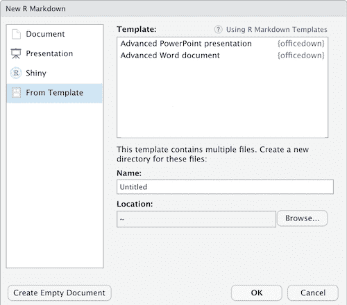
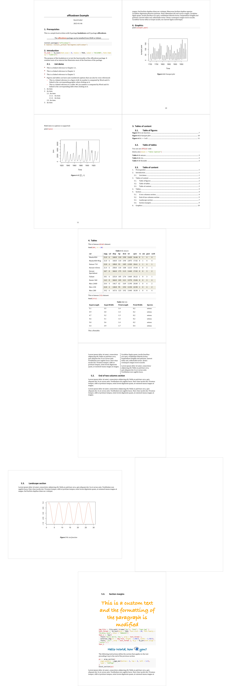

officedown is bringing some officer features into R markdown documents.
Overview
Word
The package facilitates the formatting of Microsoft Word documents produced by R Markdown documents by providing a range of features:

-
Compatibility with the functions of the package
officerfor the production of “runs” and “blocks” of content (text formatting, landscape mode, tables of contents, etc.).You can add a column break in a two-column section, you can easily color a chunk of text, you can add tables of contents at any place in the document and also add a list of figures or list of tables.
-
Ability to use the table styles and list styles defined in the “reference_docx” which serves as a template for the pandoc document.
With rmarkdown, you can reuse all paragraph styles. With officedown, you can also reuse table and list styles. These features are based on the use of Word templates (
reference_docx). It is recommended to learn how “Word styles” work for paragraphs, tables and lists if you never really used Word styles.These styles are to be defined in a Word document that serves as a template. You must first create a Word document (or edit an existing Word document), adjust the styles and save it. This document which serves as a vehicle for the defined styles will be used by R Markdown, the argument
reference_docxmust be filled in with the file path. -
The replacement of captions (tables, figures and standard identifiers) by captions containing a Word bookmark that can be used for cross-referencing. Also the replacement of cross-references by cross-references using fields calculated by Word. The syntax conforms to the bookdown cross-reference definition.
The package transforms some specific knitr codes into references calculated by Word, it applies to:
- cross-references with bookdown syntax
- table and image captions
- title identifiers
It is then easy to copy and paste the content into another document without losing the reference numbers. Captions are also auto-numbered by Word.
-
Full support for flextable output, including with outputs containing images and links.
The package enable knitting flextable outputs with images or plots in cells without using officer. Insertion of images in flextable is not supported with
rmarkdown::word_documentbut is possible by usingofficedown::rdocx_document.
PowerPoint
The package also enhances PowerPoint productions with R Markdown by providing a mechanism for placing results according to the slide template contained in the PowerPoint document used as “reference_doc”. It becomes easy to add several contents in the same slide.
The package also offers the possibility to transform your graphic instructions into editable vector graphics (with the rvg package) by simply wrapping your call into a call to function dml.
Ressources
The help pages are in a bookdown located at:
https://ardata-fr.github.io/officeverse/
Manuals are available at:
Installation
You can install officedown from github with:
remotes::install_github("davidgohel/officedown")Supported formats require some minimum pandoc versions:
| R Markdown output | pandoc version |
|---|---|
| Microsoft Word | >= 2.0 |
| Microsoft PowerPoint | >= 2.4 |
Getting started
rdocx_document
use RStudio Menu to create a document from officedown template.

It creates an R markdown document, parameter output is set to officedown::rdocx_document. Note that package officedown need to be loaded in the Rmd.

Word Features illustration
A bookdown is available in the package and can be used as a demo.
dir <- system.file(package = "officedown", "examples", "bookdown")
file.copy(dir, getwd(), recursive = TRUE, overwrite = TRUE)
#> [1] TRUE
# rmarkdown::render_site("bookdown")
fs::dir_tree("bookdown", recurse = TRUE)
#> bookdown
#> ├── 01-intro.Rmd
#> ├── 02-toc.Rmd
#> ├── 03-tables.Rmd
#> ├── 04-sections.Rmd
#> ├── 05-plots.Rmd
#> ├── _bookdown.yml
#> ├── _output.yml
#> ├── bookdown.Rproj
#> ├── index.Rmd
#> └── template.docxYou should see the following document:
